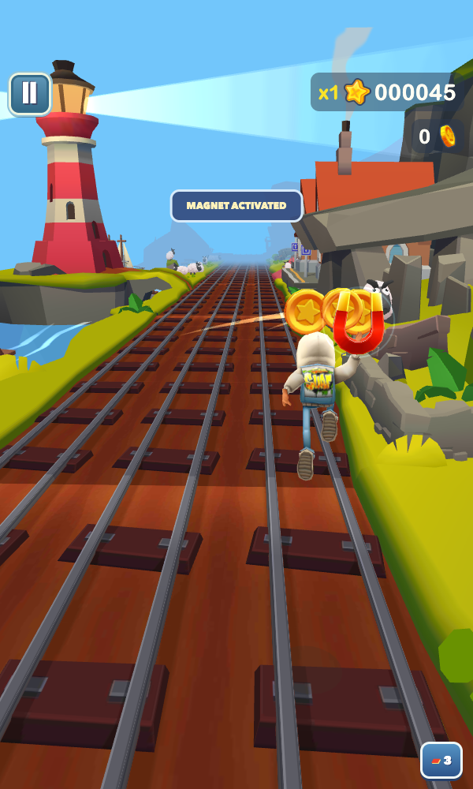

<!doctype html>
<html lang="en"><meta charset="utf-8"><meta name="viewport" content="width=device-width, initial-scale=1">
<title>Subway Surfers / REA — README artwork</title>
<style>
*{box-sizing:border-box}body{margin:0;background:#08171e;color:#f4f3df;font-family:'Avenir Next',Arial,sans-serif}.cover{position:relative;width:1280px;height:720px;overflow:hidden;background:radial-gradient(ellipse at 85% 10%,#1e4c4e80,transparent 55%),linear-gradient(135deg,#08171e,#102e32)}
.grid{position:absolute;inset:0;background-image:linear-gradient(#8ac2b80b 1px,transparent 1px),linear-gradient(90deg,#8ac2b80b 1px,transparent 1px);background-size:42px 42px;mask-image:linear-gradient(90deg,#000,transparent)}.track{position:absolute;width:750px;height:570px;right:-120px;bottom:-280px;border:1px solid #97d2bf22;transform:rotate(-35deg);box-shadow:0 0 0 42px #a4dfc808,0 0 0 84px #a4dfc808,0 0 0 126px #a4dfc808,0 0 0 168px #a4dfc808;border-radius:50%}
.copy{position:absolute;left:64px;top:55px;width:710px}.eyebrow{font-size:12px;font-weight:750;letter-spacing:3px;color:#99dcca;display:flex;align-items:center;gap:12px}.dot{width:9px;height:9px;background:#d6f667;box-shadow:0 0 24px #d6f66780;border-radius:50%}.title{font-family:'Avenir Next Condensed','Arial Narrow',sans-serif;font-size:112px;line-height:.92;font-weight:950;letter-spacing:-4px;margin:35px 0 12px;transform:skew(-6deg);transform-origin:left}.title span{color:#d6f667}.rea{font-size:25px;font-weight:850;letter-spacing:7px;margin:21px 0 26px;color:#90cabb}.description{max-width:580px;color:#bfd0ce;font-size:19px;line-height:1.6;margin:0}.pills{display:flex;gap:10px;margin-top:28px}.pill{padding:8px 17px;border:1px solid #91b7ab55;border-radius:22px;font-size:12px;font-weight:800;letter-spacing:1.5px}.pill:first-child{color:#d6f667;border-color:#d6f66766}
.footer{position:absolute;left:64px;bottom:43px;display:flex;align-items:center;gap:17px;color:#8aa6a2;font-size:12px;line-height:1.7}.footer strong{color:#f4f3df;font-size:14px;letter-spacing:1px}.mark{width:40px;height:40px;border-radius:10px;background:#d6f667;color:#102e32;display:grid;place-items:center;font-size:23px;font-weight:900}
.device{position:absolute;right:78px;top:42px;width:350px;height:608px;border:1px solid #c5d9bd55;border-radius:35px;padding:9px;background:#153333;box-shadow:-25px 25px 100px #0009;transform:rotate(4deg)}.screen{width:330px;height:588px;overflow:hidden;border-radius:26px;background:#6ec9ee}.screen img{width:100%;height:100%;object-fit:cover;object-position:center}.camera{position:absolute;width:76px;height:17px;background:#153333;top:9px;left:137px;border-radius:0 0 12px 12px}.caption{position:absolute;right:73px;bottom:33px;width:363px;text-align:center;font-size:11px;color:#8faeaa;letter-spacing:1px}.tag{position:absolute;right:366px;top:154px;background:#d6f667;color:#10271f;border-radius:12px;padding:12px 15px;transform:rotate(-7deg);box-shadow:0 10px 30px #0005;font-size:11px;font-weight:850;letter-spacing:1px;z-index:2}.tag b{font-size:18px;display:block;letter-spacing:0}.stamp{position:absolute;top:56px;right:40px;font-size:10px;letter-spacing:2px;color:#93c7b4;writing-mode:vertical-rl}
</style>
<main class="cover"><div class="grid"></div><div class="track"></div>
 <div class="copy"><div class="eyebrow"><i class="dot"></i> REVERSE ENGINEERING → NATIVE PLAY</div><h1 class="title">SUBWAY<br><span>SURFERS</span></h1><div class="rea">/ REA STUDY</div><p class="description">Read the game. Rebuild the run.<br>Recovered assets, shared gameplay, three native stacks.</p><div class="pills"><span class="pill">WEBGL</span><span class="pill">ANDROID</span><span class="pill">iOS</span></div></div>
 <div class="tag"><b>COINS IN MOTION.</b> RAISED-HAND MAGNET</div>
 <div class="device"><div class="screen"></div><div class="camera"></div></div>
 <div class="stamp">RECOVER · RECONSTRUCT · VERIFY</div><div class="caption">ACTUAL BROWSER GAMEPLAY · MAGNET FIXTURE</div>
 <div class="footer"><div class="mark">↗</div><div><strong>ONE RUN. THREE RUNTIMES.</strong><br>TypeScript + Three.js &nbsp; / &nbsp; Kotlin + GLES &nbsp; / &nbsp; Swift + SceneKit</div></div>
</main>
<script>window.setFrame=async(src,phase)=>{const image=document.getElementById('game-frame');image.src=src;await image.decode();document.querySelector('.tag').style.transform=`rotate(${-7+Math.sin(phase*Math.PI*2)*2}deg)`;};</script>
</html>
